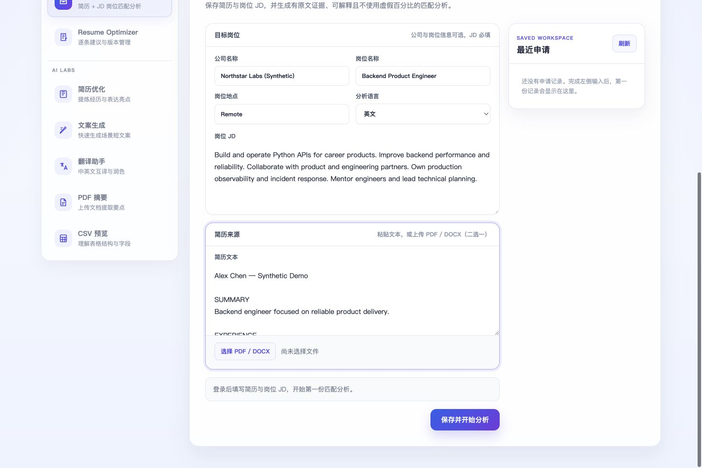
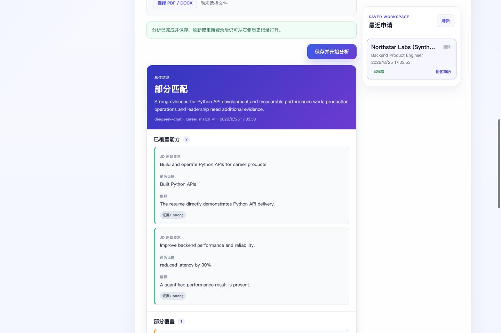
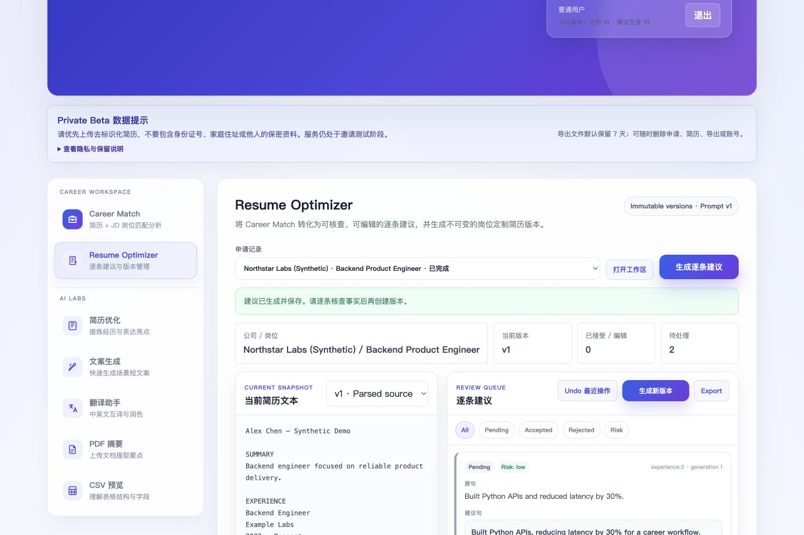
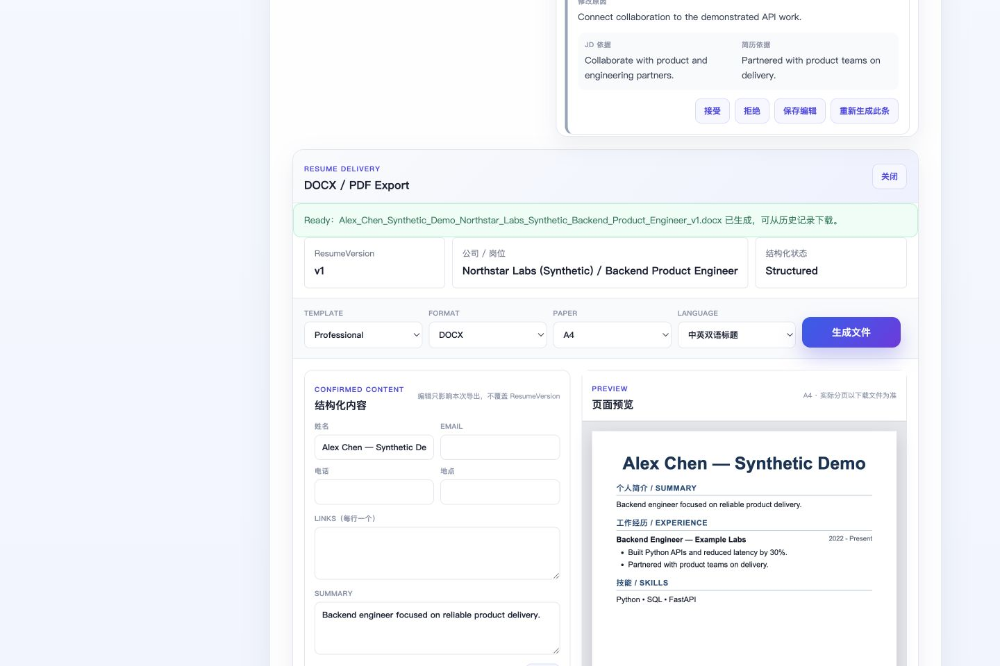

Career Match
Compare a resume with a target role using structured requirements, explicit limitations, and verbatim supporting evidence.
- PDF, DOCX, or text input
- Covered, partial, missing, and uncertain signals
- Saved application history
AI-powered career workspace
From job-description matching to evidence-grounded resume optimization and job-ready export.
CoveredPython services · API design
PartialProduction observability
Needs evidenceTeam leadership claim
01 · Product problem
Job seekers repeatedly rewrite resumes for different roles, but generic AI tools often produce unsupported claims or opaque recommendations.
Y's AI Workshop turns that open-ended prompt into a reviewable workflow: every recommendation is tied back to the resume and job description, and the user stays in control of every change.
02 · Product workflow
03 · Core features
Each stage makes the AI's role visible and keeps irreversible choices with the user.
Compare a resume with a target role using structured requirements, explicit limitations, and verbatim supporting evidence.
Review suggestions one by one. New facts and numbers are flagged as high risk instead of being silently written into the resume.
Append-only snapshots, version diff, and restore-as-new keep every accepted change traceable.
Deterministic DOCX/PDF generation with Professional and Minimal ATS templates.
Private storage boundaries, short-lived downloads, usage limits, input caps, and deletion controls support a safer beta.
04 · Product screens
Captured from the current application in a real browser. No personal information, credentials, or live AI calls are included.




05 · Architecture
The HTTP, business, model, persistence, and storage responsibilities stay separate without premature microservices.
Portable by design. SQLite supports local development; Alembic and PostgreSQL support production migration without rewriting the repository layer.
Deterministic delivery. Export rendering does not call an LLM. Confirmed content becomes a traceable DOCX/PDF artifact through ordinary code.
Provider boundaries. Model responses pass strict schemas, evidence checks, and risk detection before they can reach a product decision.
06 · Engineering highlights
Not a claim of full production scale—a deployable private-beta baseline with tested failure boundaries.
07 · My contribution
The original project began as the Group B Week 1 Nova AI intelligent workbench team prototype.
In this personal repository, I independently maintain the subsequent product repositioning, architecture refactor, Career Match, Resume Optimizer, versioning, export, production-readiness work, automated testing, documentation, and brand identity.
This distinction follows the repository's PROJECT_ORIGIN.md ; it does not present the original team prototype as solo work.
08 · Releases
Brand identity refinement exists after v0.5.0 on the current development history; no v0.5.1 tag is claimed here.
09 · Tech stack